Same scene setup, lighting, camera, rider, board, and simulation frame. Build117 is the current original rider motion. Build118 adds the first procedural body-mechanics pass for review only.
Extra speed on the straight, with more loaded knees, forward body pressure, and a small pavement bob.
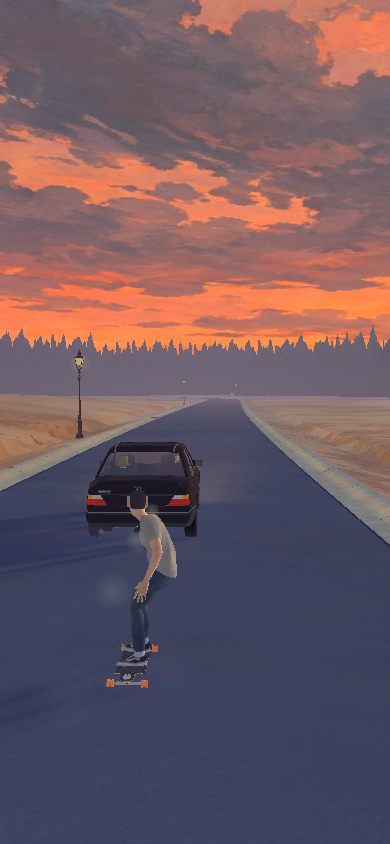
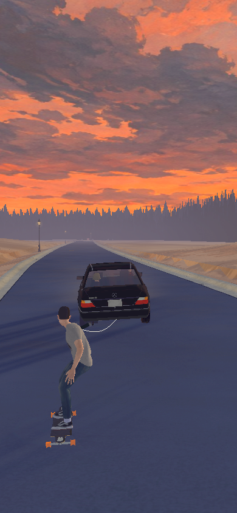
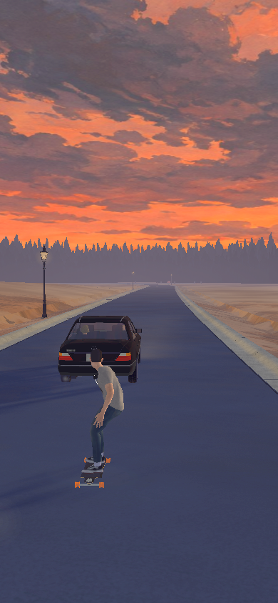
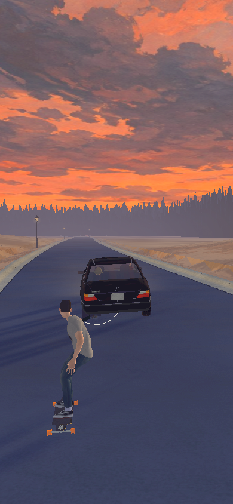
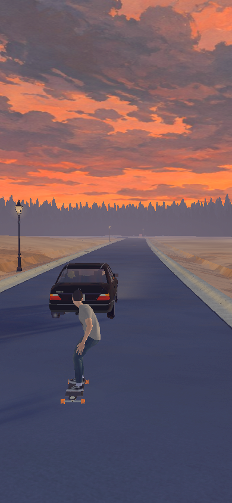
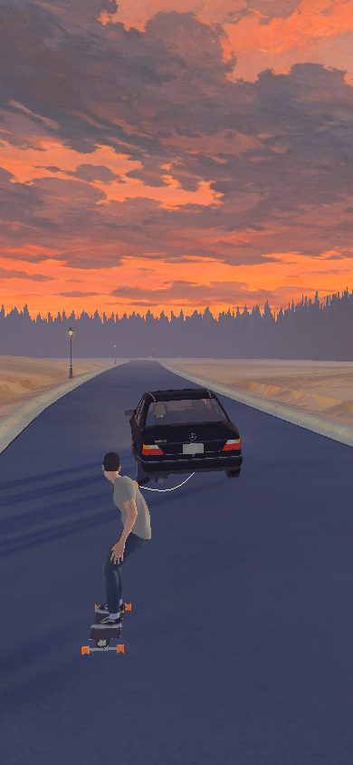
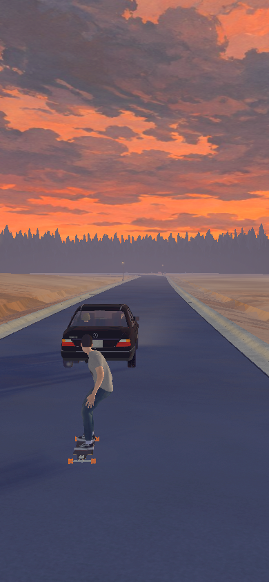
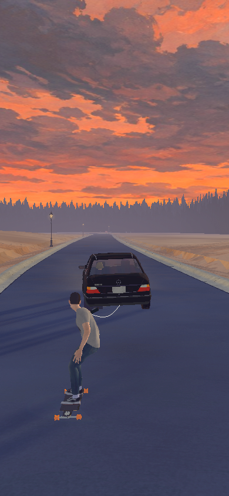
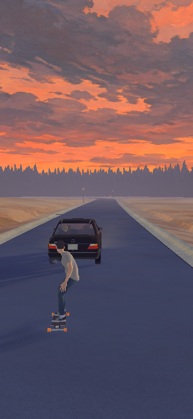
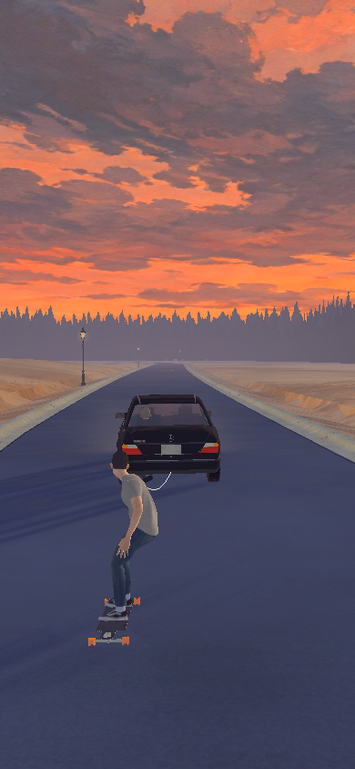
The same carve now pushes the rider into a stronger lean with a small shoulder/body yaw into the turn.
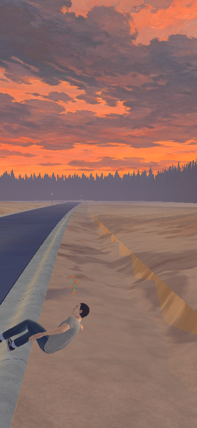
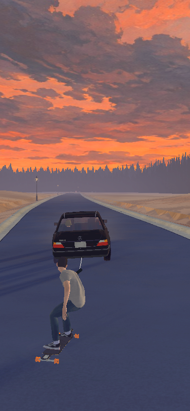
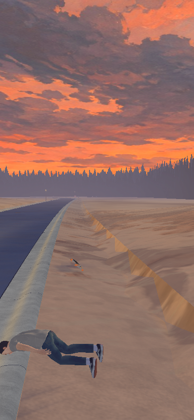
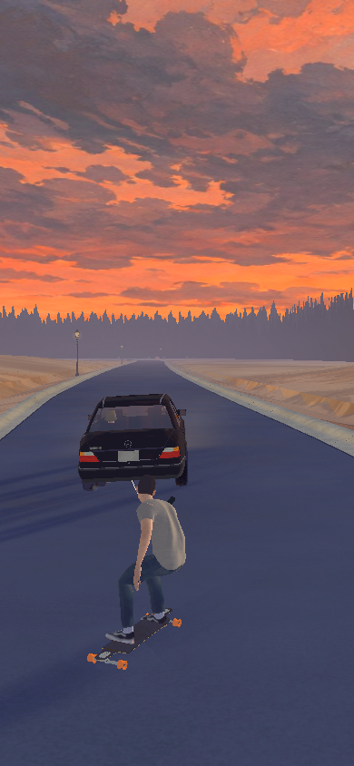
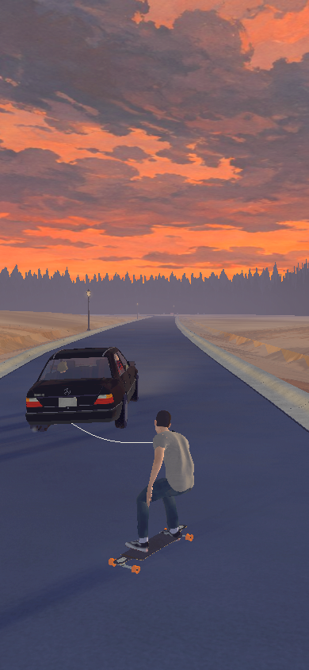
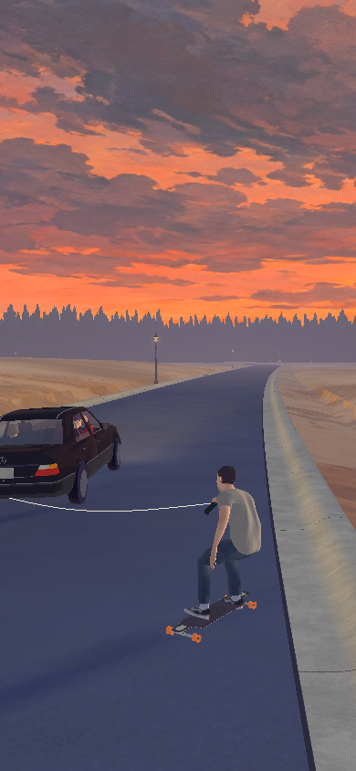
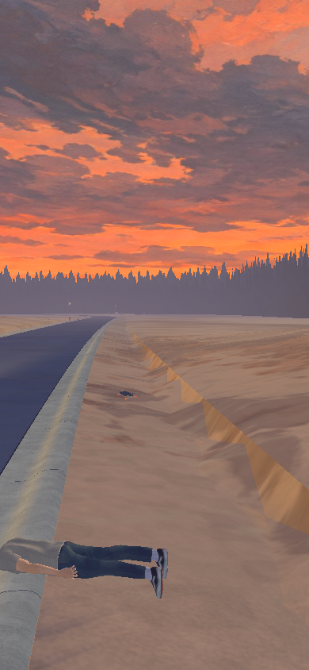
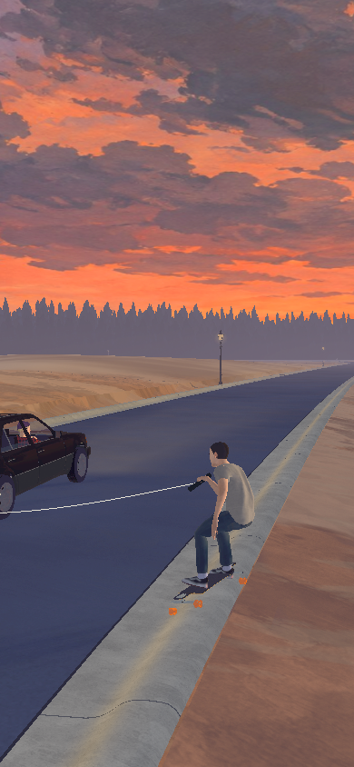
Once the rope is gone, the stance settles back instead of freezing in the same tow posture.
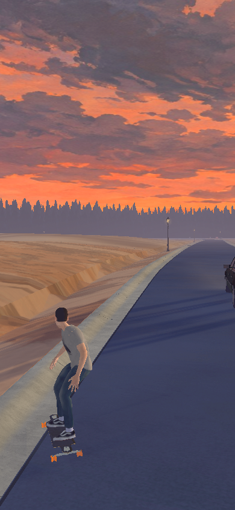
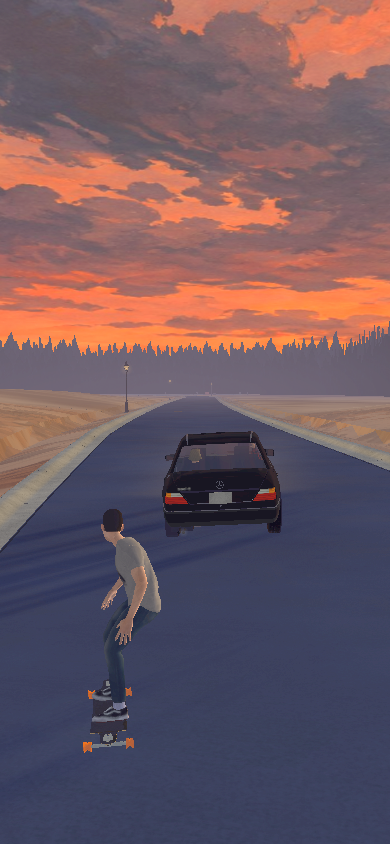
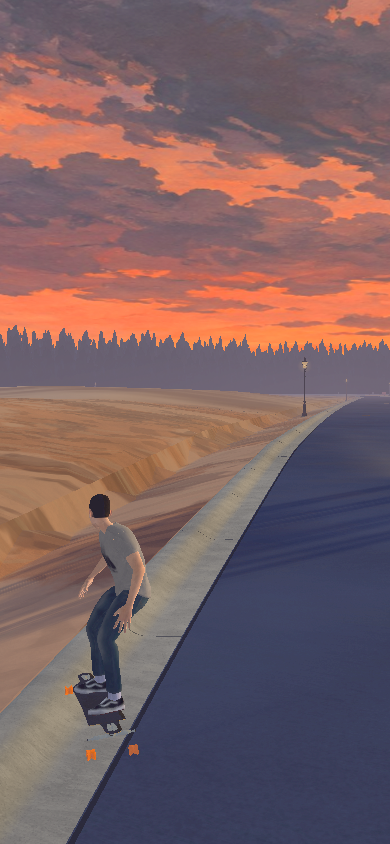
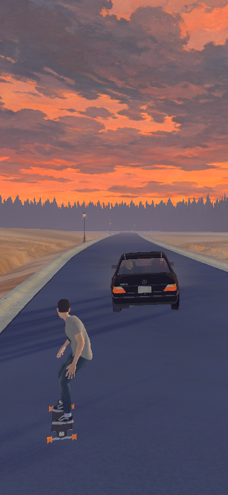
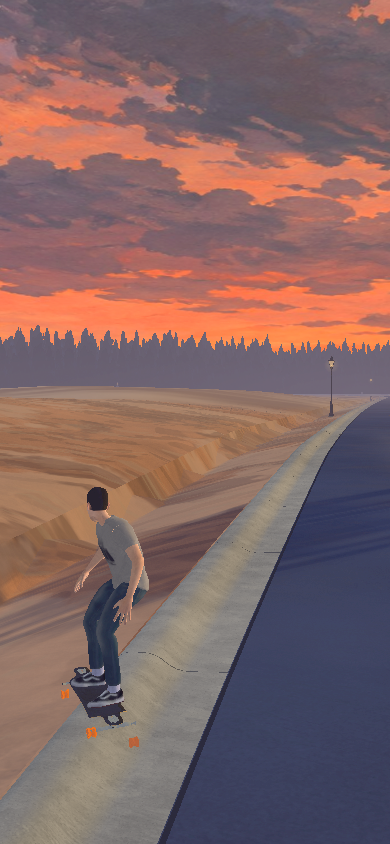
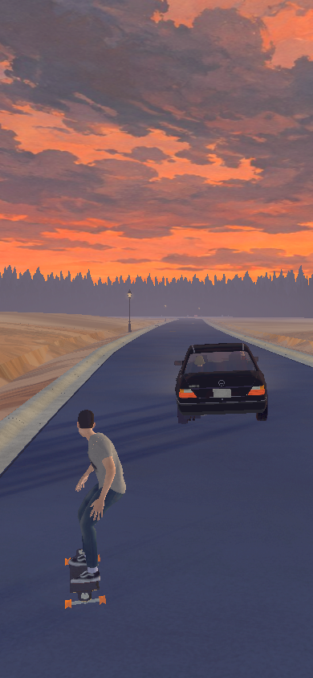
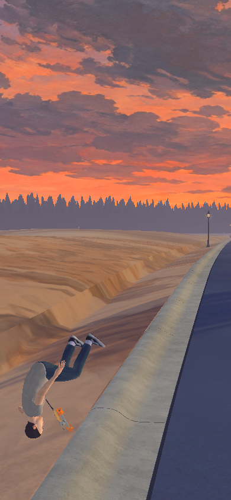
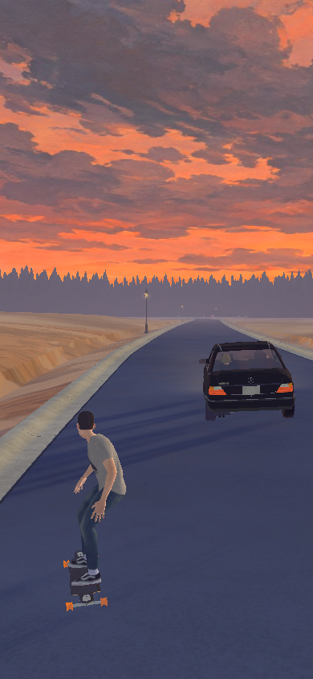
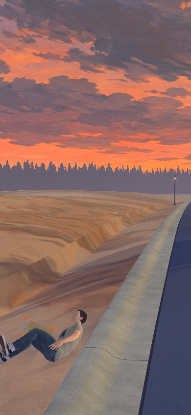
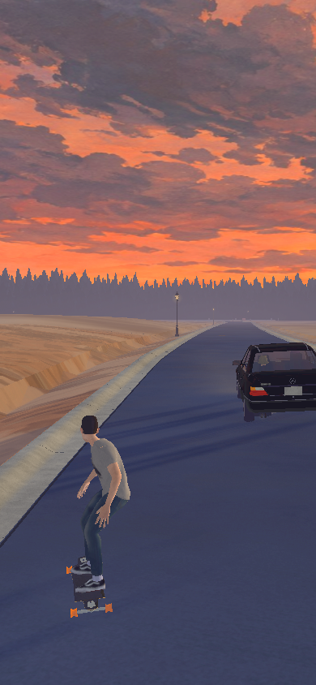